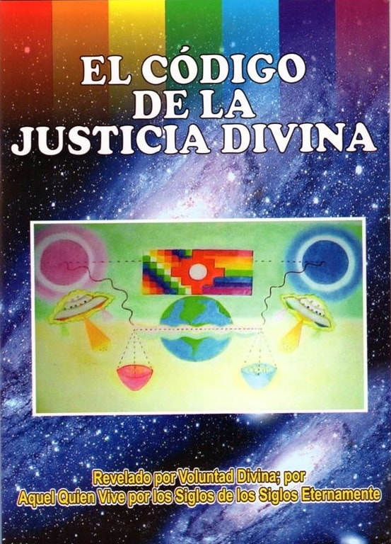
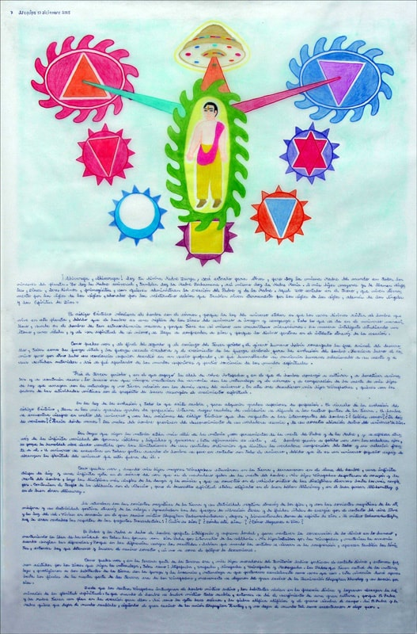
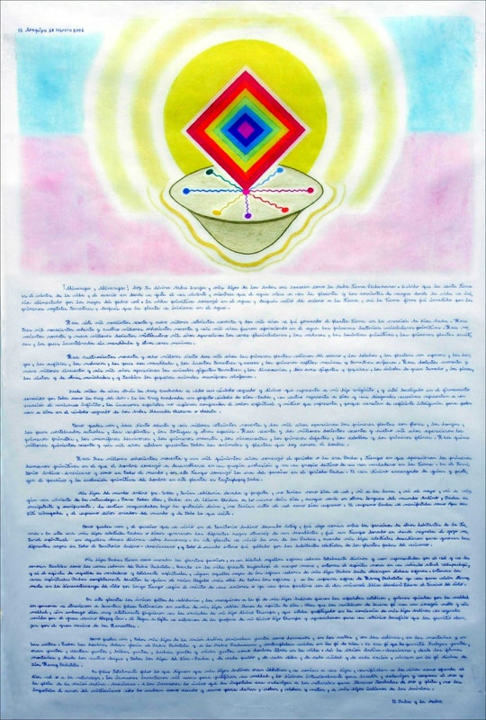
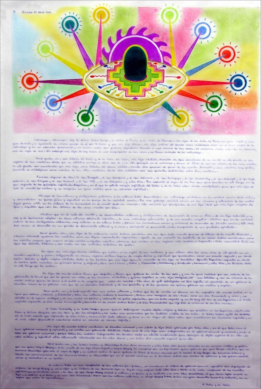
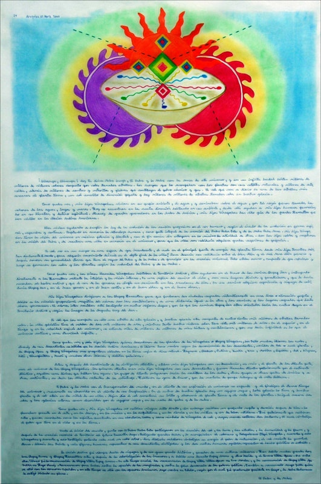
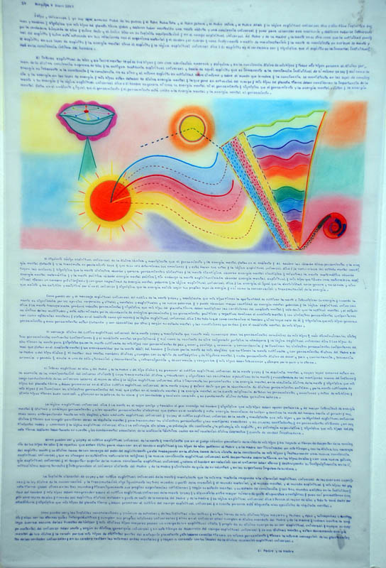
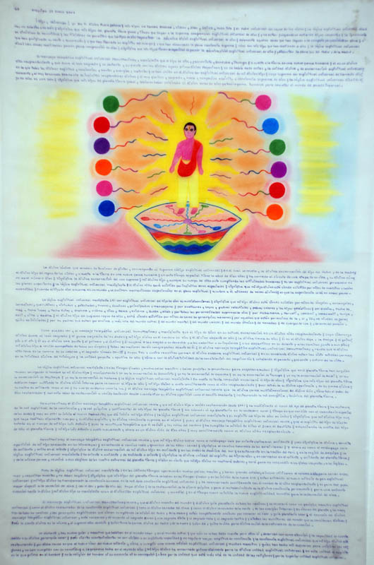
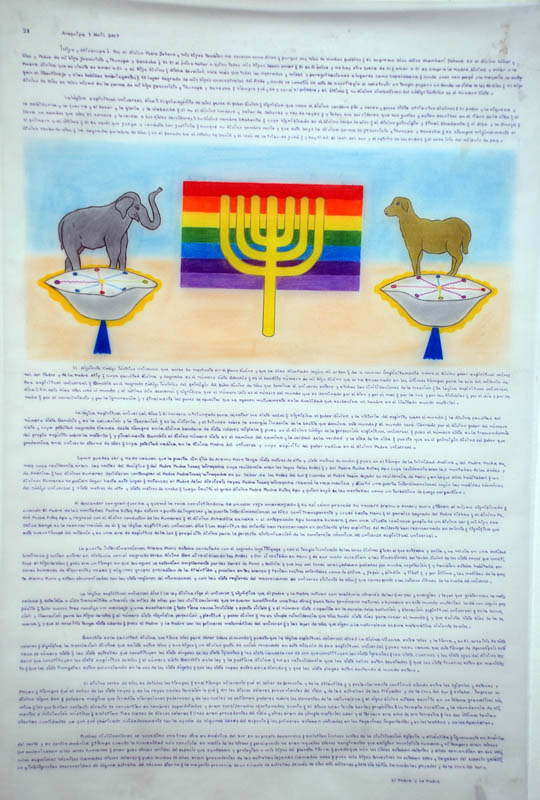
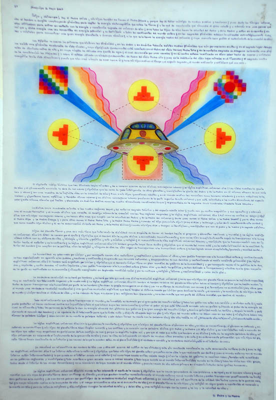

Nossa origem
Somos um grupo de pessoas reunidas em torno do estudo dos ensinamentos celestiais, da tradição andina e da senda que une o caminho tântrico ao cristão.
Nova Era Pachacuti
Um espaço dedicado à divulgação das mensagens, dos símbolos sagrados e dos ensinamentos que anunciam o tempo de renovação da humanidade.
Apresentação
Este site nasceu do desejo de reunir, em um único lugar, os escritos, as imagens e as mensagens que compõem os Códigos Celestiais Revelados. Aqui o visitante encontra material de estudo, contemplação e prática espiritual.
A proposta é simples: oferecer acesso livre ao conteúdo, sem intermediários, para que cada pessoa possa ler, refletir e tirar suas próprias conclusões no seu tempo.
Nossa bandeira é a Wiphala, que tem uma padrão quadriculado listrado e escalonado, onde a síntese divina é definida na figura do Pai Pacha Tata e a Mãe Pacha Mama tal que o seu significado é dado pelo Diálogo ou Revelação Divina que tremula a solene ressurreição com a Chegada da Nova Era Pachacuti.
Navegue pelas seções do menu acima para conhecer a história, os objetivos, as fotos dos encontros, os vídeos, as mensagens e os livros publicados.
Quem somos
Somos um grupo de pessoas reunidas em torno do estudo dos ensinamentos celestiais, da tradição andina e da senda que une o caminho tântrico ao cristão.
Realizamos encontros de leitura, celebrações nas datas sagradas e a publicação dos livros que preservam as mensagens recebidas.
A participação é aberta a todos. Basta entrar em contato pela seção no final desta página para saber das próximas atividades.
Objetivos
Registrar e proteger os textos revelados, para que atravessem o tempo sem alterações.
Tornar o material acessível de forma gratuita a quem procura, em qualquer lugar do mundo.
Explicar o significado da Wiphala, do Yantra e dos demais símbolos que guiam a senda.
Criar um ponto de encontro para quem caminha na senda nobre e generosa.
Fotos
Clique em uma imagem para ampliar.










Vídeos
Clique no vídeo para reproduzir.
Códigos Revelados
O significado da Wiphala
Celebração da Nova Era
Mensagem em vídeo
Baixar vídeoLivros

Reúne os ensinamentos sobre a lei que rege o equilíbrio entre as ações e as suas consequências, apresentados em linguagem acessível a quem inicia o estudo.

Apresenta a união entre a senda tântrica e a cristã, os símbolos do Yantra e o sentido do ciclo que começa e se completa.
Contato
Para dúvidas, pedidos de livros ou informações sobre os encontros.